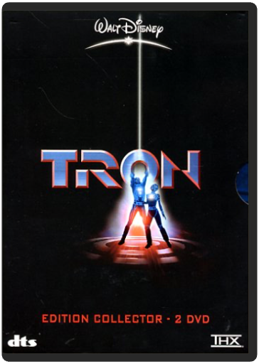
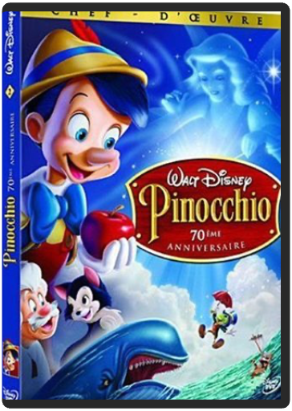

tron - édition collectorwalt disney  Flynn, ex-programmeur informatique aigri, est vite devenu une star des salles de jeu ; ça tombe plutôt bien, car son ex-boss, soucieux de protéger un secret, se sert un beau jour d'un prototype expérimental pour dématérialiser le pauvre Flynn et l'envoyer à l'intérieur du système informatique de l'entreprise, où il ne devra son salut qu'à sa dextérité aux jeux vidéo... Succès mitigé à sa sortie en salle, ce spectacle d'avant-garde a gagné peu à peu son titre mérité de film culte ; spectacle d'une grande beauté visuelle, véritable tour de force technologique réalisé à l'époque des balbutiements de l'image de synthèse, Tron a bénéficié d'un scénario véritablement innovant, de l'apport esthétique d'artistes et de designers de talent (dont le Français Moebius), et doit en grande partie son succès à son ambiance unique, mélange de contemplation silencieuse et d'action haletante (la fameuse séquence de la course à moto) dans un univers tout en néons et en figures géométriques colorées. Le DVD était attendu depuis longtemps mais cela en valait la peine : plusieurs heures de bonus sont au rendez-vous, du documentaire d'une heure et demie aux making-of des effets spéciaux en passant par les commentaires et autres galeries de photos...—David Rault walt disney, 2 : pinocchio - édition 70ème anniversairewalt disney Pinocchio (Edition 70ème anniversaire) |


 Made with Delicious Library
Made with Delicious LibraryNancy, State zipflap congrotus delicious library Thomas, Julien